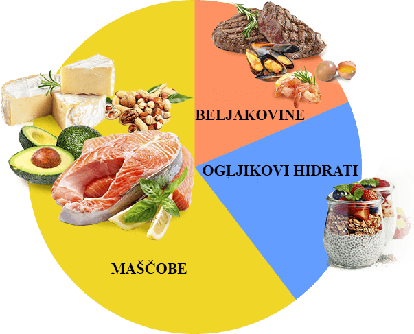

«Kolikor se spomnim – vedno sem bila na dieti. Lakota, problemi s spancem in kožo so me zmeraj spremljali. V časih je bil na tehtnici minus, potem pa sem se prenajedla in znova... Za KETO DIET sem izvedela od dietologa. Izid hujšanja me je osrečil skoraj takoj. Vsak teden sem videla minus 3 kg na tehtnici. Zame je to bila resnična čarovnija. Moje samoobčutje je bilo super, lakote ni bilo, redno sem spala 7 ur».
Izabela N, 27 let

«Zame je bil KETO DIET rešitev. Nikoli prej nisem mislil, da lahko jem vse, kar imam rad, in sproti hujšam. Dejstvo je, da je bilo v moji prehrani vedno preveč ogljikovih hidratov. Kar je povzročilo prekomerno težo več kot 100 kg, ko sem bil star 29 let. Ko sem le malo skorigiral količino ogljikovih hidratov, se je začela teža manjšati. Ampak brez ogljikovih hidratov ne morem živeti, ker imam rad hitro hrano. Potem sem izvedel za KETO DIET. Ko sem začel jemati pripomoček, kuritev odvečnih maščob se je zelo pospešila, nisem se niti ogljikovim hidratom moral odpovedati. Vsega skupaj sem se v 4 mesecih znebil 25 kg. KETO DIET je neverjeten! Priporočam vsem!»
Dare K, 49 let

Kako malo vemo o svojem organizmu. Nikoli nisem niti pomislila, kako zapleteni procesi se v njem odvijajo, dokler nisem prišla k dietologu in tam slišala za ketozo. Lenuhinja sem. Ne znam ni biti na dietah, ni se ukvarjati s športom. Zato sem si iskala nekaj lahkega in hitrega. Za KETO DIET lahko povem le eno – zakon je! S pomočjo te diete sem shujšala za rekordne 15 kg in moja postava je zdaj idealna.
Ajša R, 34 let